Every year, garbage sorting trainings are held for lyceum students in grades 5-11 as part of the "Correct Sorting" project. Senior students teach younger students how to properly sort waste into containers.
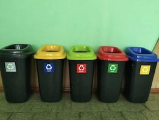
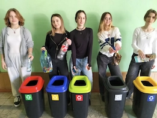
Project "Flowers Give Life"
Lyceum students of UL No. 2 took an active part in the city competition "Clean Uman". Having sorted 300 kg of various waste, the students handed it over for recycling, and with the money they received, they bought flowers and planted them in the lyceum yard.
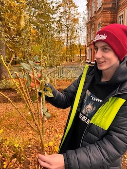
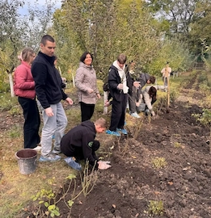
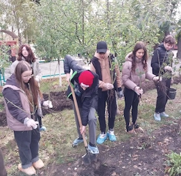
Eco-project - "Recycled Sera"
To ensure cleanliness in Uman, LLC "Ecocleaner" introduced separate sorting of garbage near multi-storey buildings in the private sectors "Mishchanka", "Nova Uman". The company installed garbage cans intended for the disposal of various types of waste.
Project "Modern sorting technologies."
The residential complex "Grekiv lis" began to use modern, innovative technological methods of collecting and sorting garbage. This made it possible to properly comply with all sanitary standards and limit access to garbage to various animals. In the future, this system will allow sorting garbage into 8 groups of different types of waste.


 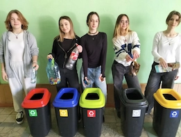
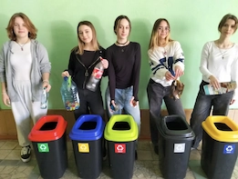

 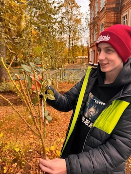
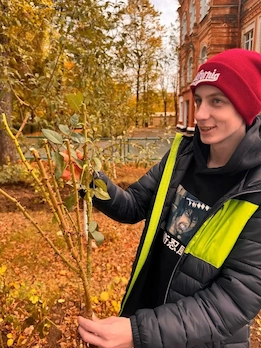
 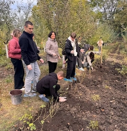
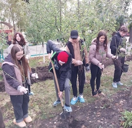
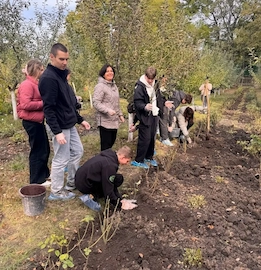
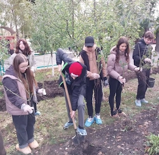